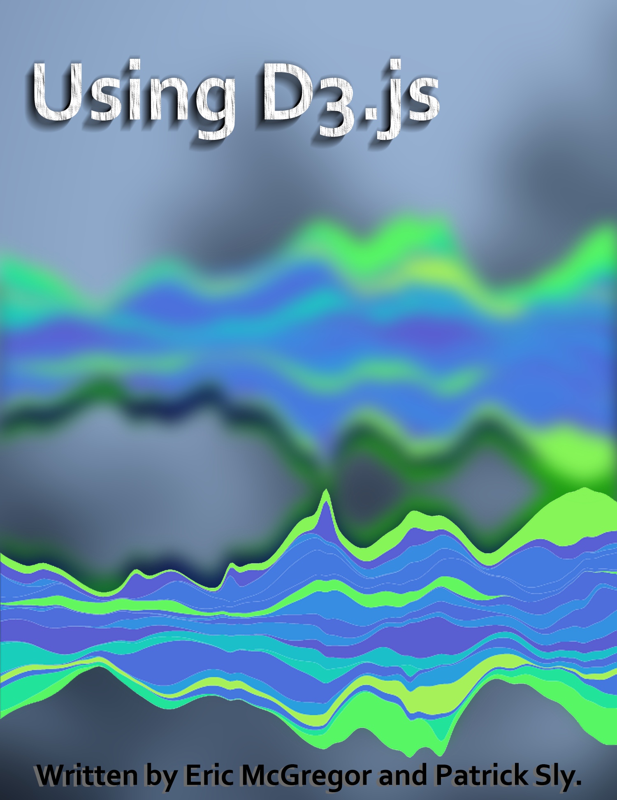

Using D3.js
This online text is an reference for the D3.js API. In these pages we provide links to the official D3.js API documentation, discuss how to use the objects and methods provided in the D3.js API, present code examples in editable sandboxes, and provide explanations for those examples.

Copyright © 2018-2019 Eric McGregor and Patrick Sly.
The code for this ebook was developed by Marijn Haverbeke and is licensed under the MIT license.
The cover art was created by James French and is based on Mike Bostock's stream graph demo.
Contents
Selections
- Creating Selections
- Selection and Node Properties
- Modifying Elements in a Selection
- Creating, Deleting, and Moving Elements
- Selection.call
Data Joins
Importing Data
Scales and Axis
- Scaling Functions
- Continuous Scales
- Axis
- Working With Dates
- Sequential Scales
- Quantize Scales
- Ordinal Scales
- Legends
Shapes
Hierarchal Layouts
- Creating Hierarchal Models
- Trees, Clusters, and Radial Layouts
- Treemap Layout
- Partition Layout
- Circle-Packing Layout